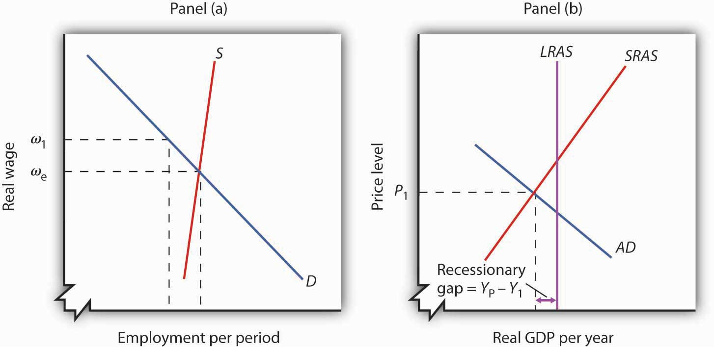
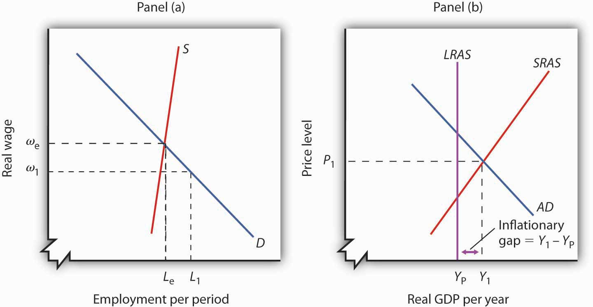
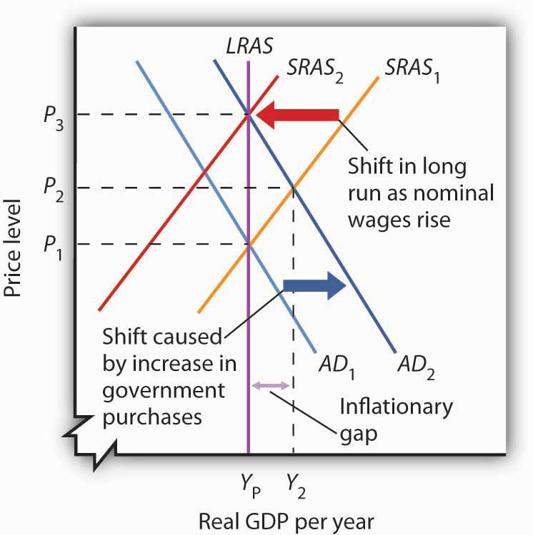
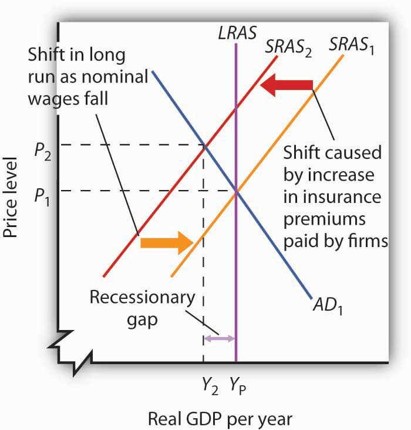
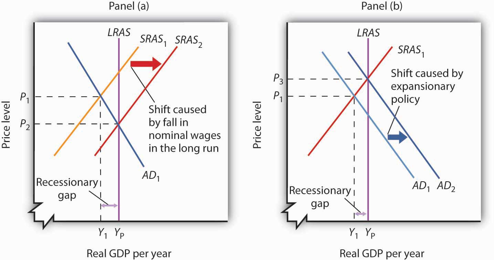
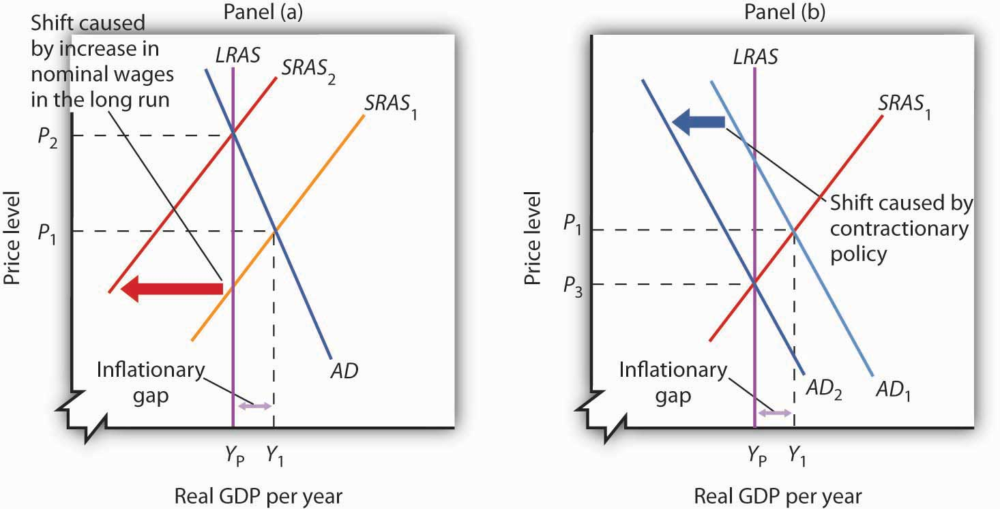
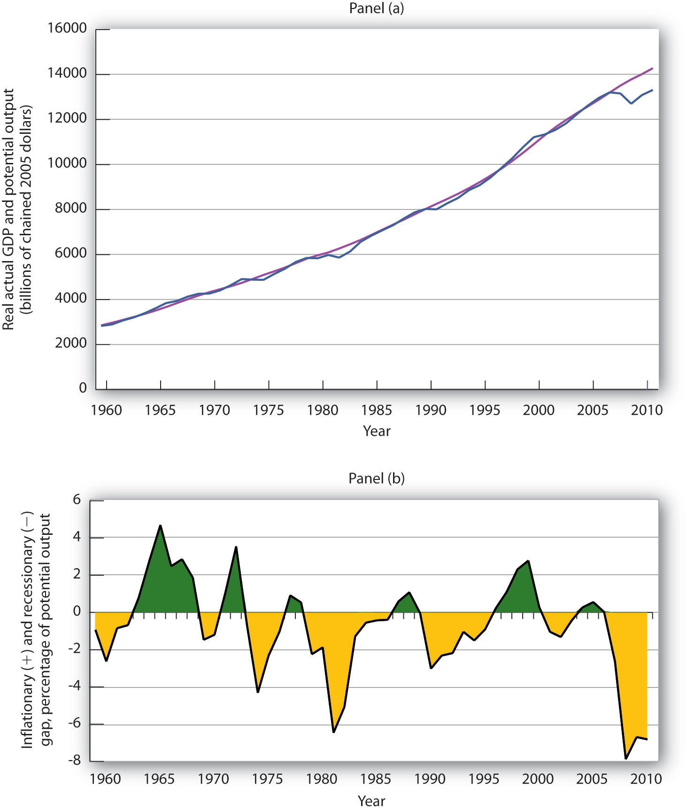

The intersection of the economy’s aggregate demand and short-run aggregate supply curves determines equilibrium real GDP and price level in the short run. The intersection of aggregate demand and long-run aggregate supply determines its long-run equilibrium. In this section we will examine the process through which an economy moves from equilibrium in the short run to equilibrium in the long run.
The long run puts a nation’s macroeconomic house in order: only frictional and structural unemployment remain, and the price level is stabilized. In the short run, stickiness of nominal wages and other prices can prevent the economy from achieving its potential output. Actual output may exceed or fall short of potential output. In such a situation the economy operates with a gap. When output is above potential, employment is above the natural level of employment. When output is below potential, employment is below the natural level.
At any time, real GDP and the price level are determined by the intersection of the aggregate demand and short-run aggregate supply curves. If employment is below the natural level of employment, real GDP will be below potential. The aggregate demand and short-run aggregate supply curves will intersect to the left of the long-run aggregate supply curve.
Suppose an economy’s natural level of employment is Le, shown in Panel (a) of Figure 22.10 "A Recessionary Gap". This level of employment is achieved at a real wage of ωe. Suppose, however, that the initial real wage ω1 exceeds this equilibrium value. Employment at L1 falls short of the natural level. A lower level of employment produces a lower level of output; the aggregate demand and short-run aggregate supply curves, AD and SRAS, intersect to the left of the long-run aggregate supply curve LRAS in Panel (b). The gap between the level of real GDP and potential output, when real GDP is less than potential, is called a recessionary gapThe gap between the level of real GDP and potential output, when real GDP is less than potential..
Figure 22.10 A Recessionary Gap
If employment is below the natural level, as shown in Panel (a), then output must be below potential. Panel (b) shows the recessionary gap YP − Y1, which occurs when the aggregate demand curve AD and the short-run aggregate supply curve SRAS intersect to the left of the long-run aggregate supply curve LRAS.
Just as employment can fall short of its natural level, it can also exceed it. If employment is greater than its natural level, real GDP will also be greater than its potential level. Figure 22.11 "An Inflationary Gap" shows an economy with a natural level of employment of Le in Panel (a) and potential output of YP in Panel (b). If the real wage ω1 is less than the equilibrium real wage ωe, then employment L1 will exceed the natural level. As a result, real GDP, Y1, exceeds potential. The gap between the level of real GDP and potential output, when real GDP is greater than potential, is called an inflationary gapThe gap between the level of real GDP and potential output, when real GDP is greater than potential.. In Panel (b), the inflationary gap equals Y1 − YP.
Figure 22.11 An Inflationary Gap
Panel (a) shows that if employment is above the natural level, then output must be above potential. The inflationary gap, shown in Panel (b), equals Y1 − YP. The aggregate demand curve AD and the short-run aggregate supply curve SRAS intersect to the right of the long-run aggregate supply curve LRAS.
We have already seen that the aggregate demand curve shifts in response to a change in consumption, investment, government purchases, or net exports. The short-run aggregate supply curve shifts in response to changes in the prices of factors of production, the quantities of factors of production available, or technology. Now we will see how the economy responds to a shift in aggregate demand or short-run aggregate supply using two examples presented earlier: a change in government purchases and a change in health-care costs. By returning to these examples, we will be able to distinguish the long-run response from the short-run response.
Suppose an economy is initially in equilibrium at potential output YP as in Figure 22.12 "Long-Run Adjustment to an Inflationary Gap". Because the economy is operating at its potential, the labor market must be in equilibrium; the quantities of labor demanded and supplied are equal.
Figure 22.12 Long-Run Adjustment to an Inflationary Gap
An increase in aggregate demand to AD2 boosts real GDP to Y2 and the price level to P2, creating an inflationary gap of Y2 − YP. In the long run, as price and nominal wages increase, the short-run aggregate supply curve moves to SRAS2. Real GDP returns to potential.
Now suppose aggregate demand increases because one or more of its components (consumption, investment, government purchases, and net exports) has increased at each price level. For example, suppose government purchases increase. The aggregate demand curve shifts from AD1 to AD2 in Figure 22.12 "Long-Run Adjustment to an Inflationary Gap". That will increase real GDP to Y2 and force the price level up to P2 in the short run. The higher price level, combined with a fixed nominal wage, results in a lower real wage. Firms employ more workers to supply the increased output.
The economy’s new production level Y2 exceeds potential output. Employment exceeds its natural level. The economy with output of Y2 and price level of P2 is only in short-run equilibrium; there is an inflationary gap equal to the difference between Y2 and YP. Because real GDP is above potential, there will be pressure on prices to rise further.
Ultimately, the nominal wage will rise as workers seek to restore their lost purchasing power. As the nominal wage rises, the short-run aggregate supply curve will begin shifting to the left. It will continue to shift as long as the nominal wage rises, and the nominal wage will rise as long as there is an inflationary gap. These shifts in short-run aggregate supply, however, will reduce real GDP and thus begin to close this gap. When the short-run aggregate supply curve reaches SRAS2, the economy will have returned to its potential output, and employment will have returned to its natural level. These adjustments will close the inflationary gap.
Again suppose, with an aggregate demand curve at AD1 and a short-run aggregate supply at SRAS1, an economy is initially in equilibrium at its potential output YP, at a price level of P1, as shown in Figure 22.13 "Long-Run Adjustment to a Recessionary Gap". Now suppose that the short-run aggregate supply curve shifts owing to a rise in the cost of health care. As we explained earlier, because health insurance premiums are paid primarily by firms for their workers, an increase in premiums raises the cost of production and causes a reduction in the short-run aggregate supply curve from SRAS1 to SRAS2.
Figure 22.13 Long-Run Adjustment to a Recessionary Gap
A decrease in aggregate supply from SRAS1 to SRAS2 reduces real GDP to Y2 and raises the price level to P2, creating a recessionary gap of YP − Y2. In the long run, as prices and nominal wages decrease, the short-run aggregate supply curve moves back to SRAS1 and real GDP returns to potential.
As a result, the price level rises to P2 and real GDP falls to Y2. The economy now has a recessionary gap equal to the difference between YP and Y2. Notice that this situation is particularly disagreeable, because both unemployment and the price level rose.
With real GDP below potential, though, there will eventually be pressure on the price level to fall. Increased unemployment also puts pressure on nominal wages to fall. In the long run, the short-run aggregate supply curve shifts back to SRAS1. In this case, real GDP returns to potential at YP, the price level falls back to P1, and employment returns to its natural level. These adjustments will close the recessionary gap.
How sticky prices and nominal wages are will determine the time it takes for the economy to return to potential. People often expect the government or the central bank to respond in some way to try to close gaps. This issue is addressed next.
If the economy faces a gap, how do we get from that situation to potential output?
Gaps present us with two alternatives. First, we can do nothing. In the long run, real wages will adjust to the equilibrium level, employment will move to its natural level, and real GDP will move to its potential. Second, we can do something. Faced with a recessionary or an inflationary gap, policy makers can undertake policies aimed at shifting the aggregate demand or short-run aggregate supply curves in a way that moves the economy to its potential. A policy choice to take no action to try to close a recessionary or an inflationary gap, but to allow the economy to adjust on its own to its potential output, is a nonintervention policyA policy choice to take no action to try to close a recessionary or an inflationary gap, but to allow the economy to adjust on its own to its potential output.. A policy in which the government or central bank acts to move the economy to its potential output is called a stabilization policyA policy in which the government or central bank acts to move the economy to its potential output..
Figure 22.14 "Alternatives in Closing a Recessionary Gap" illustrates the alternatives for closing a recessionary gap. In both panels, the economy starts with a real GDP of Y1 and a price level of P1. There is a recessionary gap equal to YP − Y1. In Panel (a), the economy closes the gap through a process of self-correction. Real and nominal wages will fall as long as employment remains below the natural level. Lower nominal wages shift the short-run aggregate supply curve. The process is a gradual one, however, given the stickiness of nominal wages, but after a series of shifts in the short-run aggregate supply curve, the economy moves toward equilibrium at a price level of P2 and its potential output of YP.
Figure 22.14 Alternatives in Closing a Recessionary Gap
Panel (a) illustrates a gradual closing of a recessionary gap. Under a nonintervention policy, short-run aggregate supply shifts from SRAS1 to SRAS2. Panel (b) shows the effects of expansionary policy acting on aggregate demand to close the gap.
Panel (b) illustrates the stabilization alternative. Faced with an economy operating below its potential, public officials act to stimulate aggregate demand. For example, the government can increase government purchases of goods and services or cut taxes. Tax cuts leave people with more after-tax income to spend, boost their consumption, and increase aggregate demand. As AD1 shifts to AD2 in Panel (b) of Figure 22.14 "Alternatives in Closing a Recessionary Gap", the economy achieves output of YP, but at a higher price level, P3. A stabilization policy designed to increase real GDP is known as an expansionary policyA stabilization policy designed to increase real GDP..
Figure 22.15 "Alternatives in Closing an Inflationary Gap" illustrates the alternatives for closing an inflationary gap. Employment in an economy with an inflationary gap exceeds its natural level—the quantity of labor demanded exceeds the long-run supply of labor. A nonintervention policy would rely on nominal wages to rise in response to the shortage of labor. As nominal wages rise, the short-run aggregate supply curve begins to shift, as shown in Panel (a), bringing the economy to its potential output when it reaches SRAS2 and P2.
Figure 22.15 Alternatives in Closing an Inflationary Gap
Panel (a) illustrates a gradual closing of an inflationary gap. Under a nonintervention policy, short-run aggregate supply shifts from SRAS1 to SRAS2. Panel (b) shows the effects of contractionary policy to reduce aggregate demand from AD1 to AD2 in order to close the gap.
A stabilization policy that reduces the level of GDP is a contractionary policyA stabilization policy designed to reduce real GDP.. Such a policy would aim at shifting the aggregate demand curve from AD1 to AD2 to close the gap, as shown in Panel (b). A policy to shift the aggregate demand curve to the left would return real GDP to its potential at a price level of P3.
For both kinds of gaps, a combination of letting market forces in the economy close part of the gap and of using stabilization policy to close the rest of the gap is also an option. Later chapters will explain stabilization policies in more detail, but there are essentially two types of stabilization policy: fiscal policy and monetary policy. Fiscal policyThe use of government purchases, transfer payments, and taxes to influence the level of economic activity. is the use of government purchases, transfer payments, and taxes to influence the level of economic activity. Monetary policyThe use of central bank policies to influence the level of economic activity. is the use of central bank policies to influence the level of economic activity.
How large are inflationary and recessionary gaps? Panel (a) of Figure 22.16 "Real GDP and Potential Output" shows potential output versus the actual level of real GDP in the United States since 1960. Real GDP appears to follow potential output quite closely, although you see some periods where there have been inflationary or recessionary gaps. Panel (b) shows the sizes of these gaps expressed as percentages of potential output. The percentage gap is positive during periods of inflationary gaps and negative during periods of recessionary gaps. Over the last 50 years, the economy has seldom departed by more than 5% from its potential output. So the size and duration of the recessionary gap from 2009 to 2011 certainly stand out.
Figure 22.16 Real GDP and Potential Output
Panel (a) shows potential output (the blue line) and actual real GDP (the purple line) since 1960. Panel (b) shows the gap between potential and actual real GDP expressed as a percentage of potential output. Inflationary gaps are shown in green and recessionary gaps are shown in yellow.
Source: Bureau of Economic Analysis, NIPA Table 1.1.6 (revised February 29, 2012). Real Gross Domestic Product, Chained Dollars [Billions of chained (2005) dollars]. Seasonally adjusted at annual rates; Congressional Budget Office, The Budget and Economic Outlook: An Update, August 2011.
Panel (a) gives a long-run perspective on the economy. It suggests that the economy generally operates at about potential output. In Panel (a), the gaps seem minor. Panel (b) gives a short-run perspective; the view it gives emphasizes the gaps. Both of these perspectives are important. While it is reassuring to see that the economy is often close to potential, the years in which there are substantial gaps have real effects: Inflation or unemployment can harm people.
Some economists argue that stabilization policy can and should be used when recessionary or inflationary gaps exist. Others urge reliance on the economy’s own ability to correct itself. They sometimes argue that the tools available to the public sector to influence aggregate demand are not likely to shift the curve, or they argue that the tools would shift the curve in a way that could do more harm than good.
Economists who advocate stabilization policies argue that prices are sufficiently sticky that the economy’s own adjustment to its potential will be a slow process—and a painful one. For an economy with a recessionary gap, unacceptably high levels of unemployment will persist for too long a time. For an economy with an inflationary gap, the increased prices that occur as the short-run aggregate supply curve shifts upward impose too high an inflation rate in the short run. These economists believe it is far preferable to use stabilization policy to shift the aggregate demand curve in an effort to shorten the time the economy is subject to a gap.
Economists who favor a nonintervention approach accept the notion that stabilization policy can shift the aggregate demand curve. They argue, however, that such efforts are not nearly as simple in the real world as they may appear on paper. For example, policies to change real GDP may not affect the economy for months or even years. By the time the impact of the stabilization policy occurs, the state of the economy might have changed. Policy makers might choose an expansionary policy when a contractionary one is needed or vice versa. Other economists who favor nonintervention also question how sticky prices really are and if gaps even exist.
The debate over how policy makers should respond to recessionary and inflationary gaps is an ongoing one. These issues of nonintervention versus stabilization policies lie at the heart of the macroeconomic policy debate. We will return to them as we continue our analysis of the determination of output and the price level.
Using the scenario of the Great Depression of the 1930s, as analyzed in the previous Try It!, tell what kind of gap the U.S. economy faced in 1933, assuming the economy had been at potential output in 1929. Do you think the unemployment rate was above or below the natural rate of unemployment? How could the economy have been brought back to its potential output?
In an analysis that spans 66 countries over nearly eight centuries, economists Carmen Reinhart and Kenneth Rogoff investigate hundreds of financial crises and the economic busts each leaves in its wake. With a database that includes crisis episodes that go back as far as 12th-century China and medieval Europe and continue until the financial crisis of 2007–2008, the authors look at the patterns of economic behavior that characterize the periods leading up to financial crises and the patterns that characterize the recoveries.
They argue that looking over a long period of history is necessary because financial crises are “rare” events. Financial crises occur at varying intervals, and researchers studying a period of 25 years or so may not encounter the equivalent of a 100-year, category 5 hurricane that hits a major, low-lying city with a faulty levee system.
In general, such crises follow periods of relative economic calm. For example, the period in the United States from the mid-1980s until 2007 was often referred to as the Great Moderation. During such periods, inflationary and recessionary gaps may occur, but they are relatively small and short-lived. Societies begin to feel that they have tamed the business cycle, that policy makers have gotten smarter, and that moderation will continue.
But then it happens. The accumulation of too much debt by governments, businesses, or consumers leads to a financial meltdown. As housing prices are run up, for example, people tend to find ways to justify their heavy borrowing and to rationalize the ascent in prices: Demographics have changed; mortgage terms have improved; the regulation we have put in place is better this time; it’s better to buy now, before prices go up even more; housing prices won’t fall. Memories of the last crisis fade. “This time is different,” they argue.
But Reinhart and Rogoff provide convincing evidence that “this time” is usually not different. Large-scale debt buildups lead to crises of confidence, and a financial crisis ensues. The aftermath is typically a severe and prolonged recessionary gap. On average, they find the following to be true:
To what extent is the financial crisis of the late 2000s likely to follow this typical pattern? The authors argue that experience with expansionary fiscal policy in such circumstances is actually quite limited. Most often, governments are shut out of borrowing markets when crises hit. Japan’s government explicitly tried to implement fiscal stimulus, but the authors warn against drawing conclusions from one such example. The authors caution that governments should weigh any potential benefit of fiscal stimulus against the problem of higher public debt. They also note that central banks in 2007–2008 acted quickly and aggressively with expansionary monetary policies. But, they caution against “push[ing] too far the conceit that we are smarter than our predecessors” (p. 238). The global nature of the current situation only adds to the difficulty of recovering fully.
There was a company failure around 15 years ago that looked like a big deal at the time, but now seems like little more than a blip. The authors quote a trader who, during this event, presciently remarked, “More money has been lost because of four words than at the point of a gun. Those words are ‘This time is different.’”
Source: Carmen M. Reinhart and Kenneth S. Rogoff, This Time Is Different: Eight Centuries of Financial Folly (Princeton: Princeton University Press, 2009).
To the graph in the previous Try It! problem we add the long-run aggregate supply curve to show that, with output below potential, the U.S. economy in 1933 was in a recessionary gap. The unemployment rate was above the natural rate of unemployment. Indeed, real GDP in 1933 was about 30% below what it had been in 1929, and the unemployment rate had increased from 3% to 25%. Note that during the period of the Great Depression, wages did fall. The notion of nominal wage and other price stickiness discussed in this section should not be construed to mean complete wage and price inflexibility. Rather, during this period, nominal wages and other prices were not flexible enough to restore the economy to the potential level of output. There are two basic choices on how to close recessionary gaps. Nonintervention would mean waiting for wages to fall further. As wages fall, the short-run aggregate supply curve would continue to shift to the right. The alternative would be to use some type of expansionary policy. This would shift the aggregate demand curve to the right. These two options were illustrated in Figure 22.15 "Alternatives in Closing an Inflationary Gap".